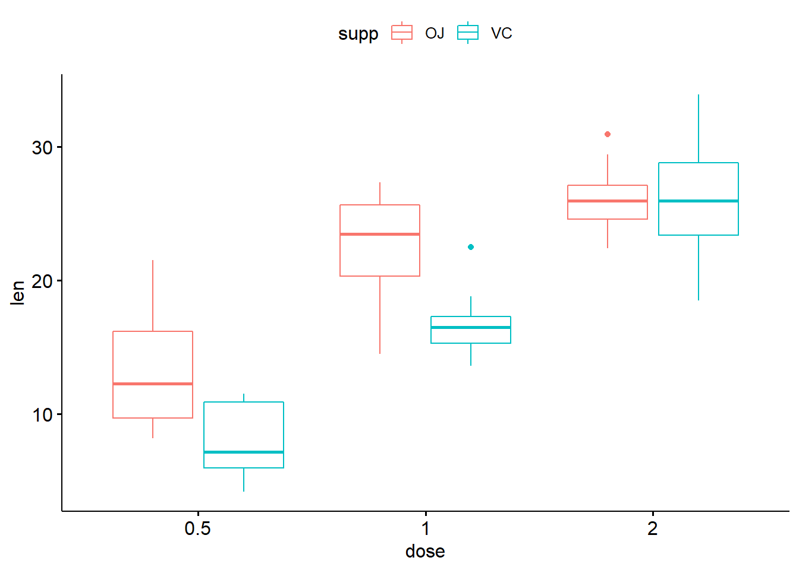
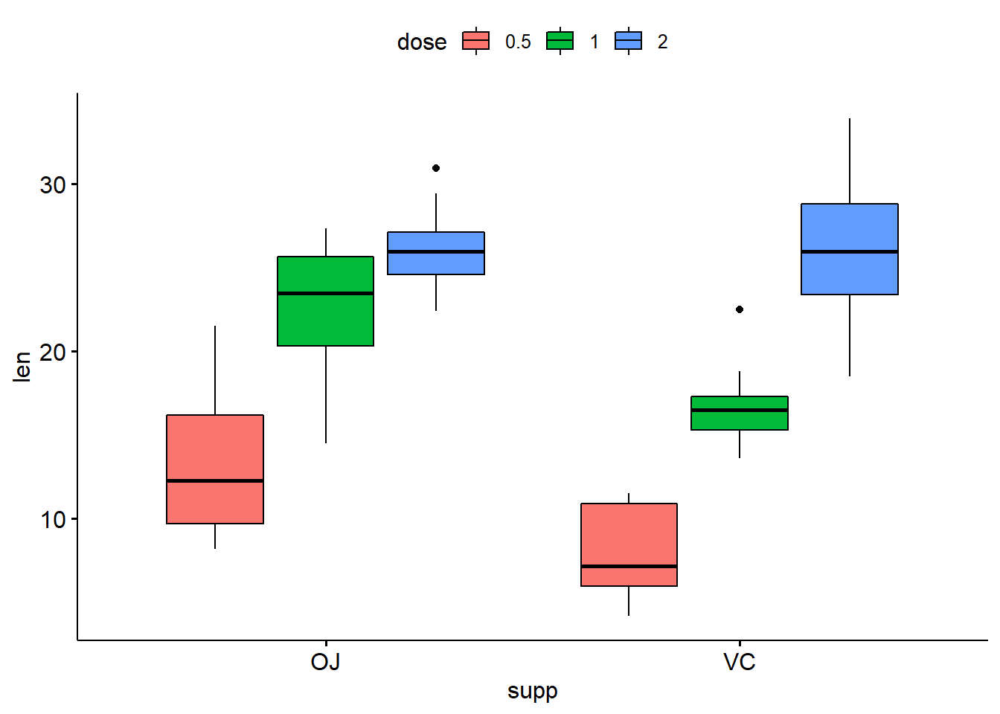
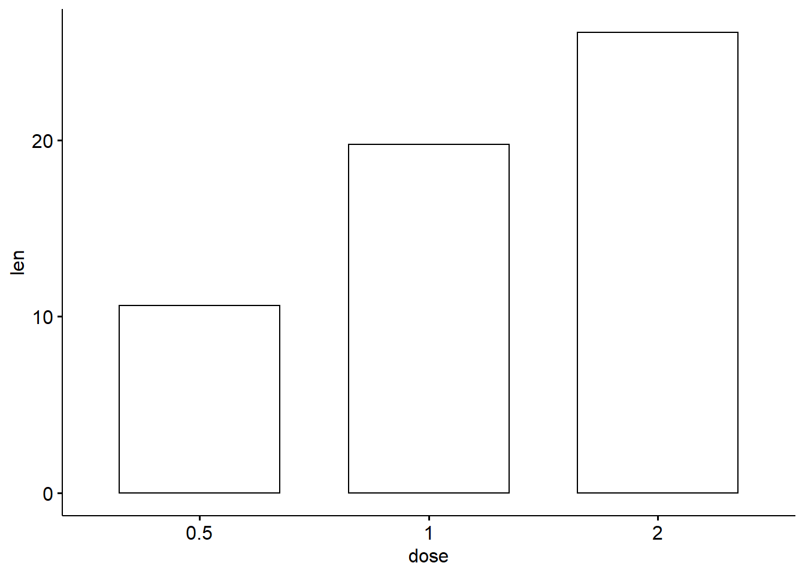
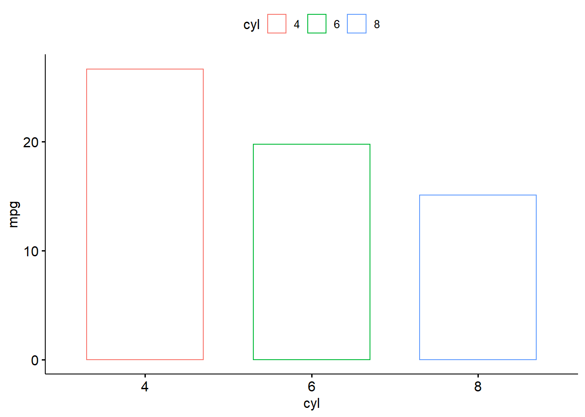

Week 5 Lab Session 4
5.1 What we have learnt so far
In the previous two weeks (Week 3 and Week 4), we have covered descriptive statistics and we have focused on measures of central tendency and measures of dispersion, In this week’s lab session we will bring everything together and we will also expand our work with skills that will allow us to present the above information visually.
5.2 Learning objectives
- Calculating measures of dispersion
- Installing the package tidyverse
- Install the package ggpubr
- creating boxplots
- Creating barcharts that will also include statistical figures
5.3 Let’s get started
If you are working on RStudio Cloud skip to step 1 below
- For this lab session you will need to create a new project in RStudio. Run RStudio and create a new project by clicking on File >> New Project … .Then select New Directory and then New Project. Enter a Directory name. As mentioned in Week 2, we recommend naming the folder by week, so “Week 6” would be ideal. Click Browse and make sure you place that folder in your “SP300” folder that you created on your Desktop.Click “Create Project” to finalise creating your new project.
- Now create a new script from File >> New File >> R Script. Save your new script under the name Week 6.
- Our first step would be to install the package ggpubr. This package allows to create customisable plots that we can include in our documents, either assignments or publications. Type the following in your console and press Enter in order to install tidyverse and ggpubr.
install.packages(“tidyverse”)
install.packages(“ggpubr”)
One of the built-in datasets that R offers for free is called ToothGrowth. The ToothGrowth data set contains the result from an experiment studying the effect of vitamin C on tooth growth in 60 Guinea pigs. Each animal received one of three dose levels of vitamin C (0.5, 1, and 2 mg/day) by one of two delivery methods, (orange juice (OJ) or ascorbic acid (a form of vitamin C and coded as VC). Even though this dataset is not the result of Psychological research it does have the structure of a data file from Psychological research where we administer an intervention in three different dosages and two different methods. We have worked with this dataset before but this time we will expand our work with more descriptive statistics and plots.
5.4 Range, Interquartile Range, Median, and Relevant Plots
In your new script type and run the following:
This informs R that we want to work with the package ggpubr andf the build-in dataset called “ToothGrowth”. If you have a look at your Environment you will now see under the section called Data an object called ToothGrowth. You will also see some additional information, it has 60 observations and 3 variables. If you also move your mouse pointer on top of ToothGrowth and leave it there you will get a tooltip window informing you that this is a data.frame. For now you can consider a data.frame as a table that contains information for more than one variables. If you click once on ToothGrowth then RStudio will open and display this data.frame for you. You can see it in a new tab that opened next to your script. You can see it has three columns, one per variable. The top row includes the variable names. len is the variable that contains information on the tooth growth, supp is the variable that contains information on the vitamin supplement used, and dose is the variable that describes the dosage that was administered.
If you type and run each the following commands one at a time you will see each variable displayed in your console. This is pretty similar to what we did in Week 4.
ToothGrowth$len
## [1] 4.2 11.5 7.3 5.8 6.4 10.0 11.2 11.2 5.2 7.0 16.5 16.5 15.2 17.3 22.5
## [16] 17.3 13.6 14.5 18.8 15.5 23.6 18.5 33.9 25.5 26.4 32.5 26.7 21.5 23.3 29.5
## [31] 15.2 21.5 17.6 9.7 14.5 10.0 8.2 9.4 16.5 9.7 19.7 23.3 23.6 26.4 20.0
## [46] 25.2 25.8 21.2 14.5 27.3 25.5 26.4 22.4 24.5 24.8 30.9 26.4 27.3 29.4 23.0
ToothGrowth$supp
## [1] VC VC VC VC VC VC VC VC VC VC VC VC VC VC VC VC VC VC VC VC VC VC VC VC VC
## [26] VC VC VC VC VC OJ OJ OJ OJ OJ OJ OJ OJ OJ OJ OJ OJ OJ OJ OJ OJ OJ OJ OJ OJ
## [51] OJ OJ OJ OJ OJ OJ OJ OJ OJ OJ
## Levels: OJ VC
ToothGrowth$dose
## [1] 0.5 0.5 0.5 0.5 0.5 0.5 0.5 0.5 0.5 0.5 1.0 1.0 1.0 1.0 1.0 1.0 1.0 1.0 1.0
## [20] 1.0 2.0 2.0 2.0 2.0 2.0 2.0 2.0 2.0 2.0 2.0 0.5 0.5 0.5 0.5 0.5 0.5 0.5 0.5
## [39] 0.5 0.5 1.0 1.0 1.0 1.0 1.0 1.0 1.0 1.0 1.0 1.0 2.0 2.0 2.0 2.0 2.0 2.0 2.0
## [58] 2.0 2.0 2.0We will now start using our newly acquired knowledge of measures of dispersion and expand our skill-set. First, we can get all the basic descriptine information about our dataset with just one command line summary()
## len supp dose
## Min. : 4.20 OJ:30 Min. :0.500
## 1st Qu.:13.07 VC:30 1st Qu.:0.500
## Median :19.25 Median :1.000
## Mean :18.81 Mean :1.167
## 3rd Qu.:25.27 3rd Qu.:2.000
## Max. :33.90 Max. :2.000You can see that the summary() functions returns the min, max, mean, median, Q1 and Q3 with just one execution. However, there are also some differences. Our variable len is a numerical variable and that is why we get all this information. Where as our variable supp is a factor with 2 levels and we only get a summary of how many cases we have in each level of the variable. In this case we see 30 for OJ and 30 for VC. As it was mentioned in the methods lecture of week 4, some variables are measurement variables whereas others can be manipulated variables. The variables we manipulate we also call them Independent Variables (IV). When we manipulate variables then the measurement variables are our Dependent Variables or DV.
Manipulated variables have to have at least two levels. For example the supp variable is a variable that we manipulated and we assigned participants randomly to one of the two conditions, levels. These two levels were VC and OJ. Similarly, dose is also a variable we manipulated and it has three levels, 0.5, 1.0, and 2.0.
In your environment, you should be able to see an object called ToothGrowth. If you click on the little blue circle with the white triangle, you will get more information about ToothGrowth. We see that len is numerical, which is correct as this was our DV, we also see that supp is a factor with 2 levels. Finally. we see that dose is also numerical, this is not correct. R does not always know/recognise the type or our variables. In this case we have to inform R that dose is also a factor. We will do that using the function as.factor().
With the above code we informed R that the variable dose that is part of the ToothGrowth dataframe is a factor. Let’s run the summary again and see whether the information we are getting is now different.
## len supp dose
## Min. : 4.20 OJ:30 0.5:20
## 1st Qu.:13.07 VC:30 1 :20
## Median :19.25 2 :20
## Mean :18.81
## 3rd Qu.:25.27
## Max. :33.90You see now that we no longer get any numerical descriptive results. We only get a count of how many cases are in each level of the factor. This means that now R has properly identified our IVs. When you work with data make sure your first step is to always check the variable and assign factors to your IVS. Since len is our only DV then we will focus on this one for our descriptives today. The following functions are self-explanatory, make sure to also add some comments in your code.
5.5 Exploring data using boxplots
One of the best plots we can create in order to visualise the spread of a variable is boxplot. Boxplots contain information on the minimum and maximum values. They also include Q1, median, and Q3. Let us have a look.
library(ggpubr) ### do not type this line if you already included at the top of your script
ggboxplot(ToothGrowth$len)As you can see the boxplot is comprised of a box and two lines. The lower point of the line represents the min and the higher point represents the max. The horizontal line inside the box represents the median, and the lower and upper sides of the box represent the Q1 and Q3 respectively. Boxplots are even more informative if we use them to plot different variables, or create different boxplot per level of a factor. For example:
So now we can see one boxplot per level of dose. Visually, the three doses seem to differ from each other. In the second term we learn how we can investigate whether these differences are meaningful or a product of chance. Back to our dataset now, we also have a second IV called supp, we can ask ggboxplot to use that IV to create more boxplots. That way we will have one boxplot per combination of the IV cells. We will explain this further below.

So what we see here is six boxplots. With red colour we see all the box plots that correspond to the participants assigned to the OJ level, with blue we see all the boxplots that correspond to the participants assigned to the VC level. We still have the levels of the dose on the x-axis. This representation helps us have some visual information about our data. For example for the dose of 1mg we see that the VC boxplot is rather compressed, so we can say that our data in that combination had a rather small spread. Contrary the boxplot of the 2mg in the VC condition is much larger, so the data were spread much more in that condition.
You can also swap position between dose and supp in the x variable and the color.
Can you ficure out what do these boxplots represent? Instead of having three pairs, we now have two triads. Also, if you dont like white boxes you can use fill instead of color.

5.6 Exploring data using barcharts
While boxplots are great for visually exploring our data they mainly represent the mean, the IQR, and the range. When we want to represent the mean of different groups we tend to use barcharts. For example:

This is a very basic version of a brachart that just includes all our DV measurements. Ideally we would want to see the mean of our DV for each level of an IV. For example the mean of len per level of dose.
This is a very basic barchart and it also contains all individual measurements points as horizontal lines. We are interested in the mean.

It would also be great to see the standard deviation of each group. We can do that by using add = “mean_sd” instead of just add = “mean”.
These vertical lines are called error bars with the upper part being called upper error bar and the lower part lower error bar. In this case the upper and lower error bar is equal to the standard deviation. Furthermore, all the tricks we used for the boxplot can also be used here. For example:
This does not really look great. This is because ggbarplot dre each bar on top of each other. We want them next to each other. We need to add an argument that will move the bars next to each other.
ggbarplot(ToothGrowth, x="dose", y = "len", fill = "supp", position = position_dodge(0.7) , add = "mean_sd")Both ggboxplot andd ggbarplot come numerous more arguments. Remember to use the help function or google them to see what other option you have. We will also using them a lot in the coming weeks so we will learn quite a few more arguments.
5.7 Exercises
The following graphs were made using ggboxplot and ggbarplot. We used the dataset mtcars. What you will have to do is use the right code to produce exactly the same graphs. When you load the mtcars dataset, the variables cyl and am are numerical. MAKE SURE YOU CONVERT THEM TO FACTOR AS YOUR FIRST STEP. Look carefully in each graph so you can identify the variables that you will have to use to generate them.
5.7.1 Exercise 1

5.7.2 Exercise 2
5.7.3 Exercise 3
5.7.4 Exercise 4
